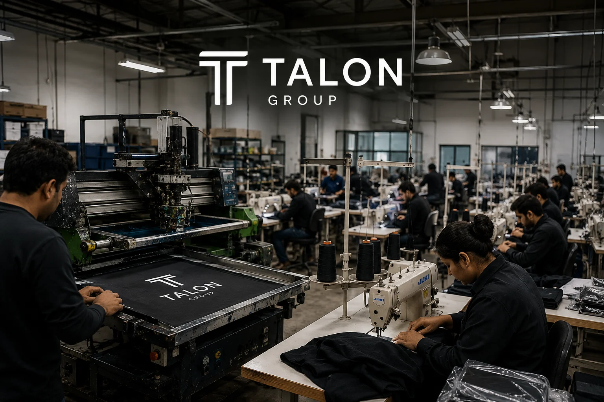

01Climate technology
Karbon Kreds
Carbon infrastructure & digital platform
Brand strategy · UX/UI · Web development · SEO
Explore the projectVisionCraft Labs brings strategy, design and engineering together to turn ambitious ideas into distinctive, commercially focused experiences.



An example of turning a project inquiry into a structured brief.
Intent Website redesign
Route Digital experience team
Next step Review the prepared brief
From the first impression to the systems behind it. One studio connecting brand, digital experience and business operations.
Carbon infrastructure & digital platform
Brand strategy · UX/UI · Web development · SEO
Explore the projectHospitality operating system
Product strategy · UX/UI · Software engineering · Automation
Explore the projectAI sports intelligence
Brand strategy · Digital experience · Content systems
Explore the projectManufacturing reimagined
Digital strategy · Web design · Photography · Content
Explore the projectChoose a focused engagement or bring us in from strategy through launch.
Product imagery and short-form films, composed with a clear idea and a precise visual language.
Explore the visual studio
Get close to the business, its audience and the problem worth solving.
Agree the direction, the scope and what success needs to mean.
Connect identity, content and interface into a coherent experience.
Build, test and refine for real screens and real use.
Launch with a maintainable foundation and a clear next step.